Drop the key artwork at this path and render the PDF again. It fills this panel automatically.
FlySowWaterMeetFoxfireGnomes
Read your hand. It becomes land in a world shared by everyone who plays. Then fly over it as an ink whorl and sow the desert into bloom.
A live shared world made of players' hands Meta Quest · desktop browser · phone Made by Tim Dries
Meta VR Start 2026
Inside this guide
Contents
Read it front to back, or jump to what you need. Judges in a hurry: start with 01, then 12.
01The ideaOne world, made of the hands of everyone who plays3
02Your hand becomes landReading your hand by eye or with a phone4
03FlyingHand gestures on Quest, keys in the browser, the phone5
04The screen explainedEvery card and counter, one by one7
05Gardening712 real species, groves, sandstorms and the golden seed8
06The foxfireHalf a minute of neon synthwave9
07GnomesWishes, missions and a team of your own10
08Grandfather Tuft and the first minutesA grumpy guide who means well11
09The atlasSix tabs that live in your left palm12
10Playing togetherThe lobby, meeting players, the Community Hand13
11Privacy and safetyNo pictures of your hand, ever14
12Setup and running it yourselfFor judges and developers15
13Credits and linksWho made it and with what16
01The idea
A world made of hands
A palm already looks like a map. The lines are rivers. A fingerprint is a hill drawn in contour lines. So we built a world out of them.
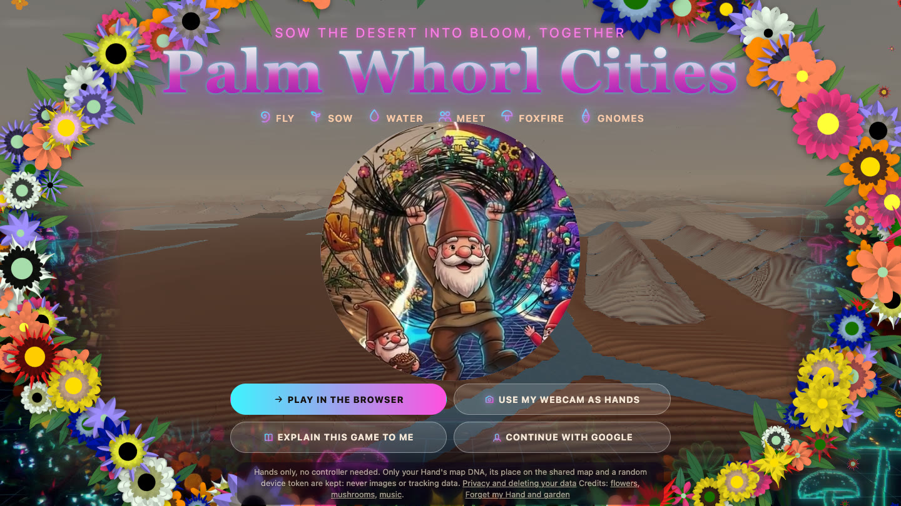
TitleThe title screen. Play in the browser, use a webcam as hands, or sign in with Google to keep your garden.
No designed levels
There is no level designer in Palm Whorl Cities. Ten founder Hands ring the Source at the centre of the world. Every other piece of land comes from a player.
You read your own hand. It becomes land: palm lines turn into rivers and fingertips into terraced hills. The world proposes three places where it fits. You pinch one, and your Hand rises out of the desert for everyone.
Then you garden it, together
You fly over that land as a whorl, a small ink creature shaped by your five fingerprints. You sow real flowers and trees, water them from the rivers and watch wildlife move in.
It is one live garden for all players. Anyone can water anyone's grove. And your whorl wears what you have sown as a bouquet, so a sky full of players is a sky full of flying flowers.
In one lineRead your hand, give it to the world, then fly over everyone's hands and sow the desert into bloom.
02Your hand becomes land
Reading your hand
In the headset you sit in a palm reader's dome. No camera reads your skin. You look at your own hand and tell the world what you see.
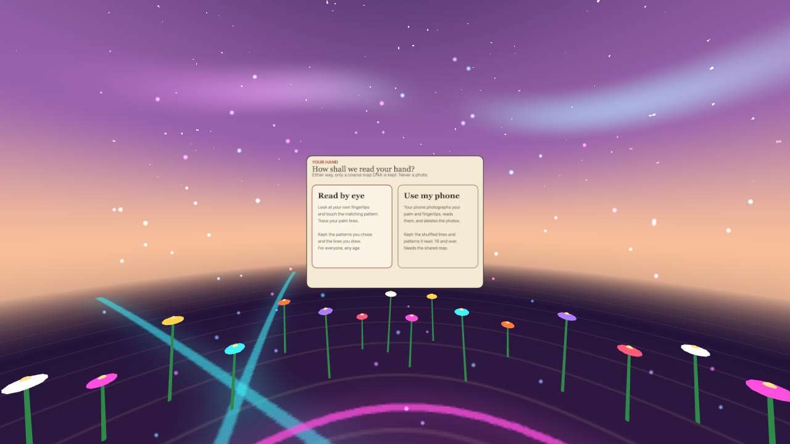
QuestThe palm reader's dome. Choose to read by eye, or let your phone read photos and delete them.
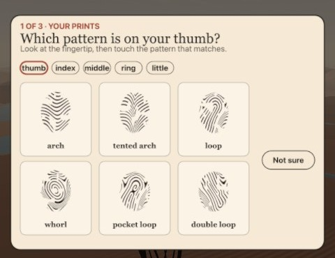
Step 1Look at each fingertip and touch the pattern that matches: arch, loop, whorl and more.
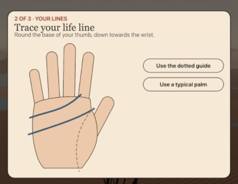
Step 2Trace your palm lines with a fingertip. A dotted guide helps if you are unsure.
By eye, or with a phone
Reading by eye works for everyone, at any age. If you prefer, your phone takes photos of your palm and fingertips, reads the lines and patterns in its own browser, then deletes the photos.
Where it lands
Your reading becomes a Hand. The world shows three places where it fits among the others. Pinch one, and your Hand rises: lines become rivers, fingertips terraced hills.
03Flying
Hands only, on Quest
You fly as a whorl. On Meta Quest there is no controller: your hands do everything. One hand steers, the other is free to garden.
To do this
Do this with your hands
Steer
Point. Your fingers are the arrow, and the whorl follows them.
Go faster
Dive: point down and gain speed.
Sow
Pinch and hold while over a Hand. The seed is thrown ahead of you.
Scatter
Sweep an open hand to the side. Seed sprays out that way.
Collect water
Skim low over a river.
Pour water
Hold a flat palm, facing down.
Hyper sow
A long pinch with your left hand.
Clear a grove
Make a fist and pull it up.
Set a gnome down
Toss an open hand upward.
Open the atlas
Turn your left palm up. Turn it down to close it.
Resting hands never steerA hand takes over only when it is raised and open for a moment. Drop it into your lap and the whorl flies on calmly.
No keys in the headsetEvery hint inside the headset shows a gesture, never a key. The atlas has a How page with every move.
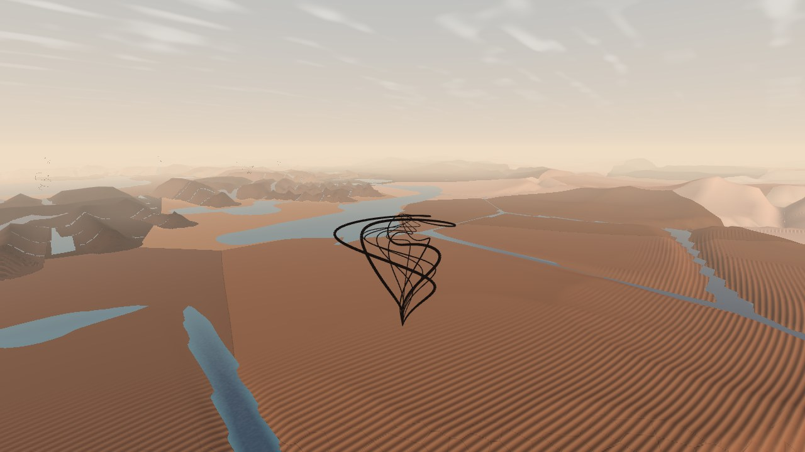
FlightThe whorl over the rivers of a founder Hand.
03Flying, continued
Keys and phones
No headset? Play in any desktop browser with the keyboard, on a phone with tilt and thumbs, or let a laptop webcam stand in for your hands.
Fly and garden
AD
Turn left and right
WS
Climb and descend
Space
Sow
QE
Previous and next seed
ZCR
Scatter
T
Pour water
F
Hyper sow
X
Clear a grove
G
Set a gnome down
Screens and sound
M
Open the atlas
P
Pause
I
Inventory
H
Bring back hidden cards
U
Mute Grandfather Tuft
N
Sound on or off
Esc
Skip the tutorial
On a phone
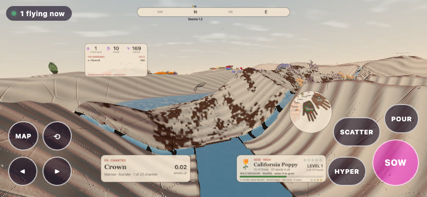
PhoneLandscape play with touch buttons.
Steer by tilting the phone (the gyroscope) or by dragging a thumb on the screen.
Touch buttons do the rest: SOW, HYPER, POUR, SCATTER, MAP, BAG, pause and next seed.
Webcam as handsOn a laptop, choose "Use my webcam as hands" on the title screen. The camera reads your gestures live, the same gestures as on Quest. Nothing is recorded.
04The screen explained
What you see while flying
The screen looks busy at first. Each card has one job, and you can hide any of them.
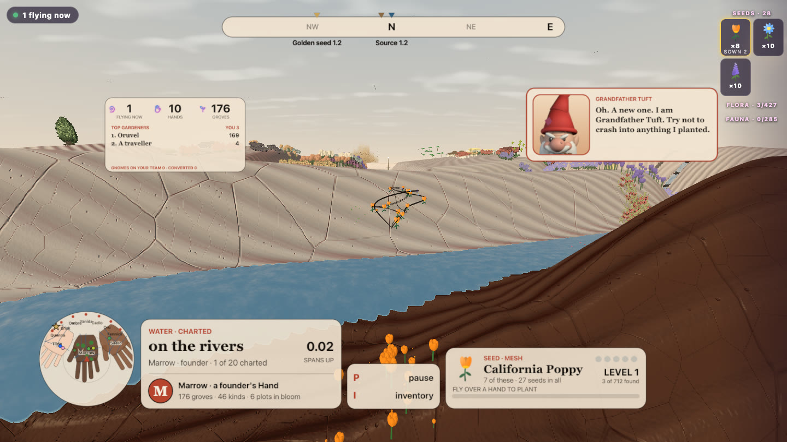
123456789
1CompassYour heading, plus markers for the Source, the golden seed, sandstorms and the nearest gnome.
2Live player countHow many people are flying in the world right now.
3Stats cardPlayers, Hands and groves, the top gardeners and your gnome team.
4Grandfather TuftYour guide's call-in window. He talks; you can mute him.
5Inventory railYour seeds and how many of each, with flora and fauna found.
6MapThe Hands around you, other players and gnomes.
7Place cardThe territory under you: its name, and the owner's picture and garden.
8HintA reminder of pause and inventory.
9Garden cardThe seed in your hand, your level and how close the grove below is to growing.
TipCards you close stay closed. Press H to bring them all back.
05Gardening
Sow the desert
Every flower, tree, bird and fish in the game is a real species. You start with a handful of seeds and find the rest as you go.
712
Real species
403
Flowers and trees to sow
4
Stages per grove
1
Shared garden
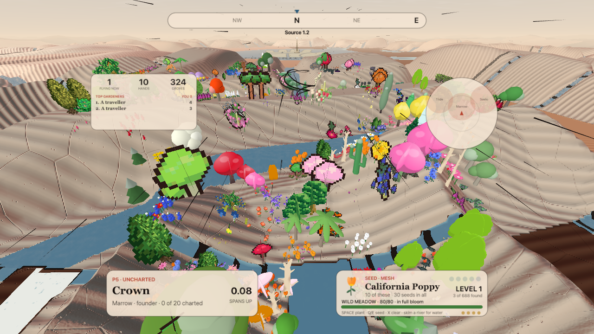
BloomA Hand in bloom. Groves grow when watered; plots bloom and wildlife moves in.
Sow, water, grow
Fly over a Hand and sow. Each planting is a grove. Skim a river to fill up with water, then pour it on your groves. Watered groves grow through four stages.
Plots bloom, wildlife arrives
When a plot fills up it blooms. Then life moves in: insects first, then birds and fish, then animals. There are mushrooms too.
You are what you sow
Your whorl wears everything you have sown as a bouquet. No two players look alike.
The world has weather
Sandstorms cross the world every ten minutes and dry what they touch. Someone has to water it again.
The golden seed appears every four minutes. Everyone sees it at the same time, and everyone races for it.
Seed clouds drift on the wind. Catch them as they pass.
Anyone can helpAny player can water any grove. Help is the fastest way to make the world bloom.
06The foxfire
Half a minute of neon
Fly through a mushroom and the world changes. The desert turns into a neon synthwave night with a striped sun. It lasts about thirty seconds.
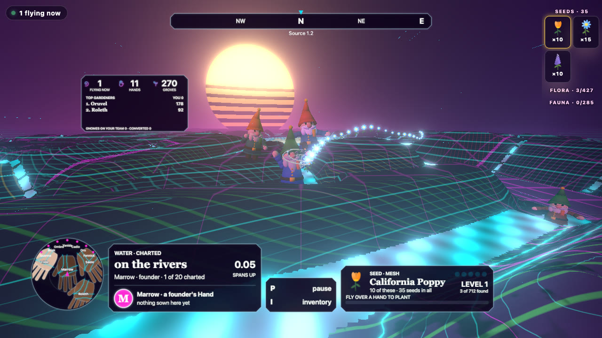
FoxfireA row of seeds glows ahead. Fly it and each seed rings the next note of a scale.
What changes
Double rewards for everything you do.
Seed rows that ring up a scale as you fly through them. A perfect line gives ten seeds.
Visions of giant gnome folk dancing on the horizon.
Wildlife ten times as big, for a little while.
A synthwave soundtrack.
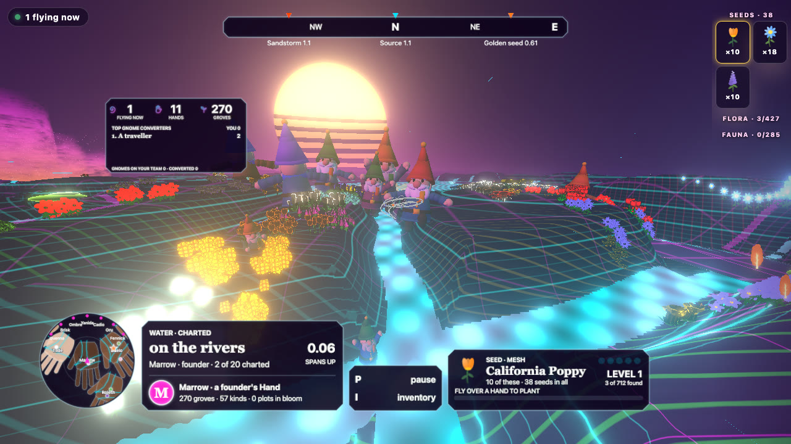
VisionsGiant gnome folk dance while the foxfire lasts.
Where to find mushroomsMushrooms grow where groves have died. A dry patch after a sandstorm is often the best place to look.
07Gnomes
Small folk with big wishes
Gnomes live in the mushrooms. They wave, they shout, and if you fly close enough, they grab on.
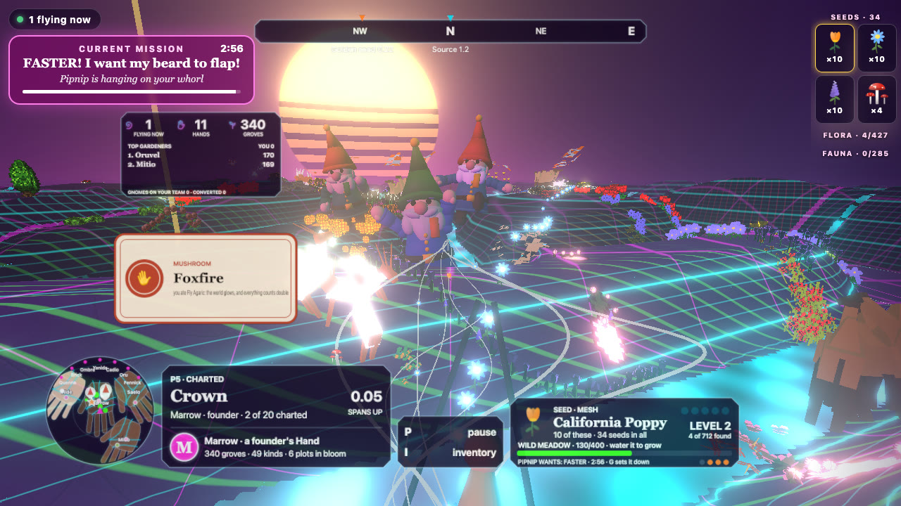
MissionA gnome hangs under the whorl. Its wish shows in the CURRENT MISSION bar, with a timer.
Finding one
Red hats on the map mark the gnomes. The compass names the nearest one, so you can just follow it.
Picking one up
Fly low and gently over a gnome. It grabs your whorl and hangs underneath with a wish, like "Faster! I want my beard to flap!"
Granting the wish
Do it before the timer runs out and the gnome joins your team. If it belonged to another gardener, it converts to you, and they are told.
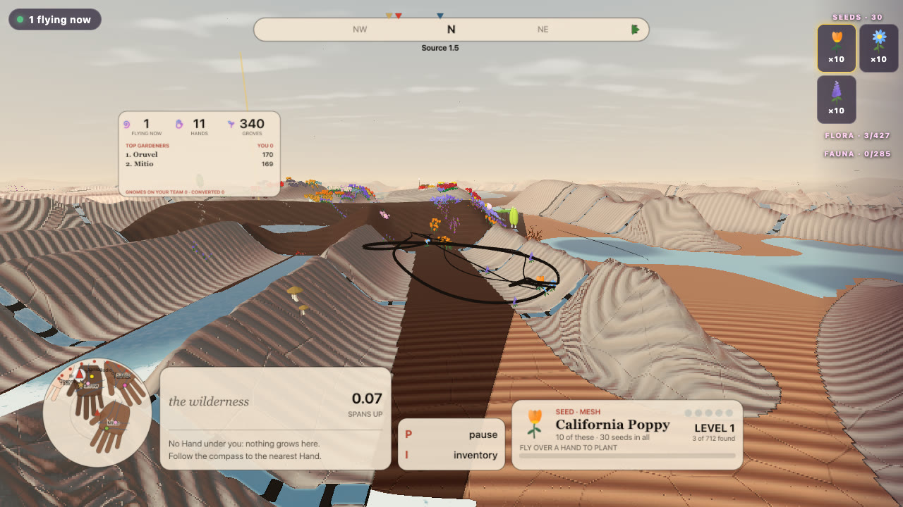
CompassThe nearest gnome, named on the compass.
Be gentleSet a gnome down with care (toss an open hand up, or G). Drop one by accident and it falls, screaming.
08Grandfather Tuft and the first minutes
Meet your guide
Grandfather Tuft is an old gnome. He is grumpy, he is proud of his garden, and he will teach you anyway.
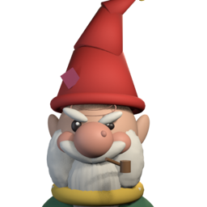
Grandfather Tuft
"Oh. A new one. I am Grandfather Tuft. Try not to crash into anything I planted."
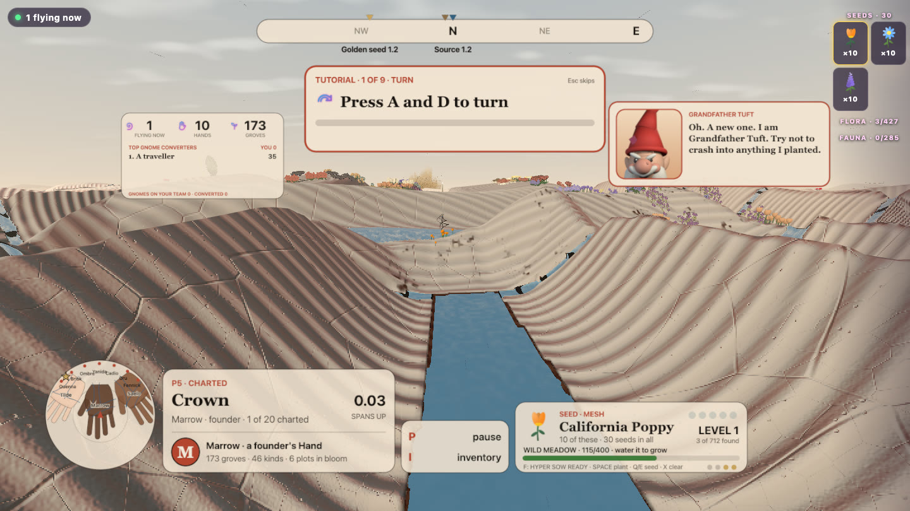
First minuteThe tutorial card in the middle, Tuft's call-in window at the top right.
A voice in the corner
Tuft calls in from a small window at the top right. He is fully voiced. He comments on what you do, and he is rarely impressed.
Nine short steps
The tutorial has nine short steps, starting with how to turn. The bar fills as you do each one. Press Esc to skip it.
First-minutes notes
In your first minutes small notes appear next to the things on screen and explain what each one is. Read them once and you know your way around.
Too much Tuft?Mute him with U, or in the atlas under How. He will not take it personally. Much.
09The atlas
Everything, in your palm
Turn your left palm up and the atlas opens above it. In the browser press M. Six tabs hold everything that is not flying.
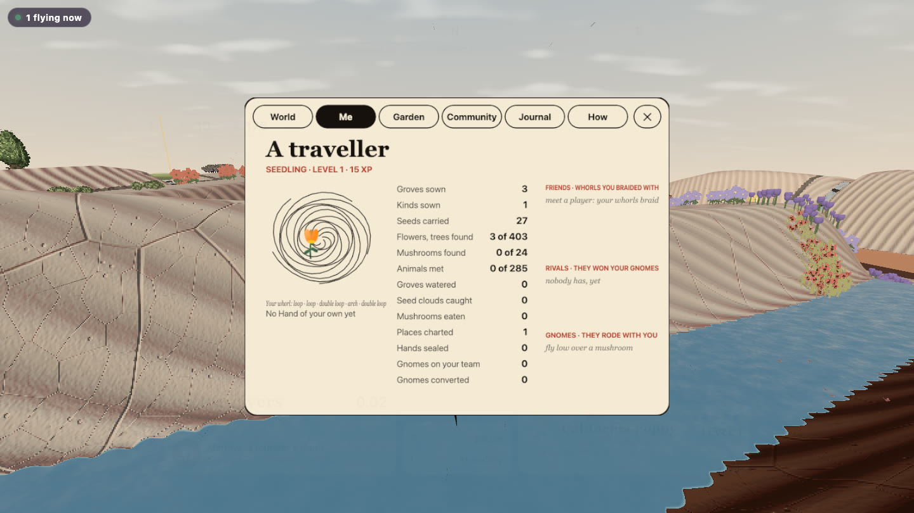
MeYour profile: your whorl, your stats, friends, rivals and the gnomes on your team.
World
The map with its layers. Replay the history of the world, from the first ten Hands to now.
Me
Your profile, your whorl, your stats, friends you have braided with, rivals and your gnomes.
Garden
The herbarium: every species in the game. The ones you have found show; the rest wait as question marks.
Community
The Community Hand, where every grove in the world is a pixel. Give a handbit to add to it.
Journal
News from the world: blooms, golden seeds, converted gnomes, new Hands.
How
Every control, the tutorial again, mute Tuft and sound settings.
10Playing together
One garden, live
Everyone flies in the same world at the same time. What you sow stays for everyone.
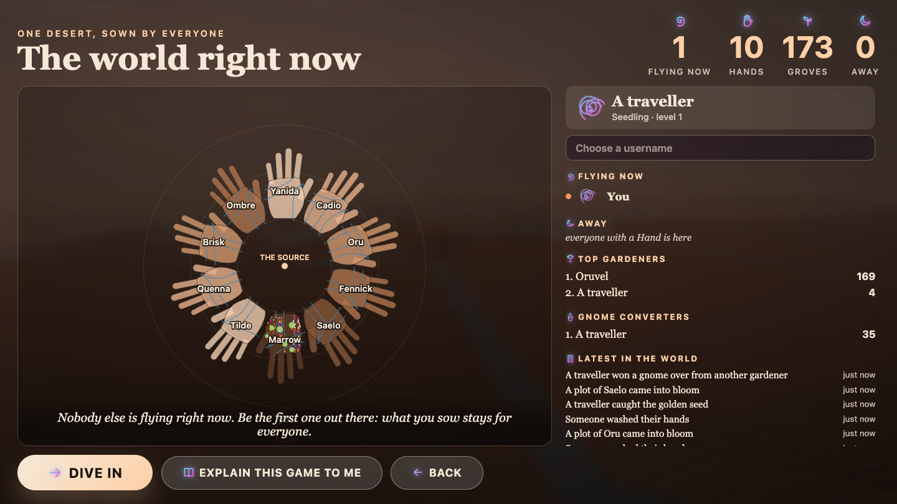
LobbyThe world right now: the live map, who is flying, top gardeners, gnome converters and the latest news.
The lobby
Before you dive in, the lobby shows the live map and who is flying. Pick a username here. Then press Dive in.
Meeting a player
Fly close to another whorl and the two of you braid together for two seconds and swap seeds. Their picture shows above their whorl, so you know who you met.
Your garden, on every device
Google sign-in keeps your garden across headset, laptop and phone. It is required on the live site. Each Google account is its own player.
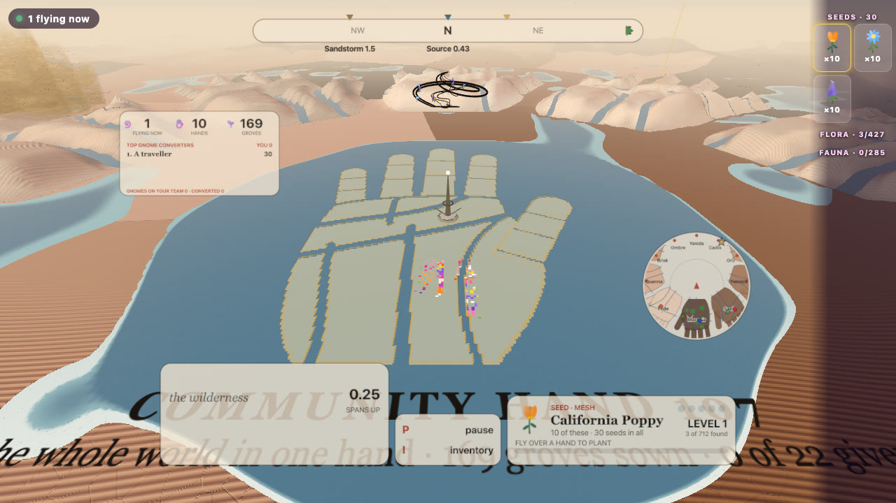
Community HandThe whole world in one hand, near the Source.
The Community Hand
At the Source lies a Hand that belongs to everyone. Every grove in the world shows up on it as one pixel, and you can give it a handbit of your own.
11Privacy and safety
Your hand stays yours
A hand is biometric. We designed around that from the very first day, and it made the game simpler, not weaker.
What we keep
A coarse map DNA of your Hand: a few hundred bytes that describe the land, not your skin.
Your Hand's place on the shared map, and your garden.
With Google sign-in: only a hash of your account id, plus the address of your profile picture.
What we never keep
Images of your hand. Not from the headset, not from the phone, not from a webcam.
Live hand tracking data. It is used in the moment and never stored or sent.
Tracking or advertising data.
The phone reads, then forgets
If you read your hand with a phone, the photos are read in the phone's own browser and deleted right away. Only the coarse map DNA leaves the phone.
Your data, your call
Export everything we hold about you, or ask us to forget your Hand and garden, at any time. Both live on the privacy page, linked from the title screen:
Privacy pageprivacy.html
ComfortPress P to pause at any time. Resting your hands never steers, so you can take a break mid-air.
What travels where
Your handIn your room. Read by eye, or photographed by your phone.
→
Your deviceTurns the reading into map DNA. Photos are deleted here.
→
Map DNAA few hundred bytes. Land, not skin.
→
Shared mapYour Hand rises for every player.
No image, no live hand tracking and no raw camera frame ever leaves your device.
12Setup and running it yourself
For judges and developers
The fastest way in is the live site. No install, no build step.
Play the live version
On Meta Quest: open the Quest Browser, go to the live URL below and press Enter in the headset. Put your controllers down; hands only.
On a desktop: open the same URL in any modern browser and press Play in the browser.
Sign in with Google when asked. The live site needs it to keep your garden.
Clone the repo, then start the game and the map server in two terminals:
# terminal 1: the game, in the repo folder
python3 serve.py 8130
# terminal 2: the map server
cd server
npx wrangler dev
# then open
http://localhost:8130/?api=http://localhost:8787
Tests
node --test tests/*.test.mjs
No headset at hand?
Add ?emulate to the URL and Meta's Quest emulator runs in a desktop browser, so you can try the headset flow with simulated hands.
What you needPython 3 for the game server, Node.js for the tests and for Wrangler (Cloudflare's tool, run through npx). Nothing else to install.
13Credits and links
Who made it
Palm Whorl Cities is made by Tim Dries for the Meta VR Start Developer Competition 2026.
three.js and WebXR in the Meta Quest Browser, with WebXR hand input and passthrough. Web Workers build the land. A Cloudflare Worker with a Durable Object and D1 keeps the shared map. MediaPipe reads hands from a webcam and palms on a phone. Models in glTF, made with Blender. GitHub Pages hosts it.
Art and sound
The flowers, trees, mushrooms, models and music are CC0 and CC-BY assets, credited in the repo. Each folder has its own credits file with source, licence and any changes:
assets/flora/CREDITS.md for flower and tree art
assets/fungi/CREDITS.md for mushrooms and models
assets/music/CREDITS.md for the foxfire music
The foxfire soundtrack is by Kevin MacLeod, Zodik, Tomasz Kucza, Section7, Bogart VGM, Tausdei, Tarush Singhal, congusbongus and MintoDog. Thank you all.
Thank you
To everyone who lends the world their hand. Every Hand after the first ten was given by a player.
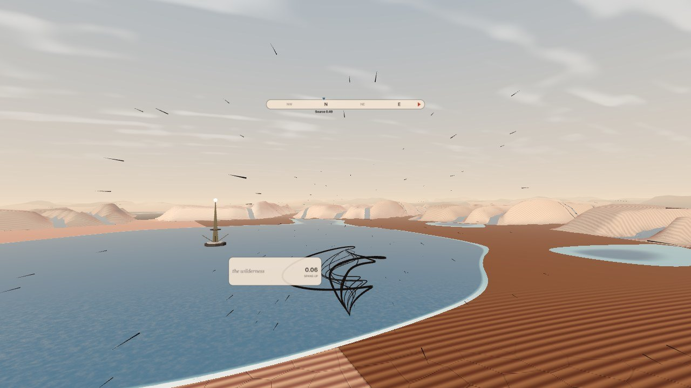
The SourceWhere the first ten Hands meet, and where every journey starts.